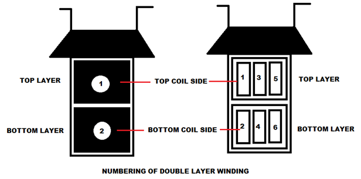
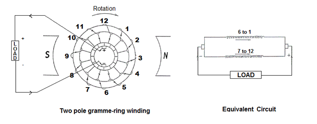

Advantages of Using Frog-Leg Winding
Drum Winding
Construction of Drum Winding
Single Layer Drum Winding
Double Layer Drum Winding
Advantages of Drum Winding
Gramme Ring Winding
Advantages of Gramme Ring Winding
Disadvantages of Gramme Ring Winding
Frog Leg Winding
Frog leg winding is a combination of a multiplex wave and a simplex lap winding in the same slots. It retains the advantages of both lap and wave windings without their inherit disadvantages.
Both lap and wave windings have equal number of parallel paths and they are connected to the same commutator.The frog-leg winding have as many parallel paths as duplex lap winding because the simplex lap winding portion supplies P no. of parallel paths and the multiplex-wave section also provides P no. of parallel paths, then total being 2P no. of paths in parallel.
Advantages of Using Frog-Leg Winding
1. This winding has more no. of parallel paths and the electric current and the voltage rating is higher than that of lap or wave winding. These frog leg wound armatures are designed for the use with moderate electric current and moderate voltage.
2. This windings are connected in series-parallel.Any wave element and the succeeding lap element connected on the commutator exactly 2 pole pitches apart in a series combination. This two commutator segments are exactly 360 electrical degrees apart and develop zero net voltage. Therefore, this lap-wave combination of a frog leg winding is fully equalized and eliminates the use of an equalizer.
That is why most large dc machines use frog leg wound armatures.
Drum Winding
This is the type of winding in which the conductors are placed in slots over the drum shaped armature surface and connected to one another by front and back connections at coil ends. Drum winding is introduced mainly to overcome the shortcomings of ring type winding.
Construction of Drum Winding
This winding may be of single layer or double layer winding.
Single Layer Drum Winding
When only one conductor or one coil side is placed in each armature slot then it is called single layer winding. This type of drum winding is rarely used.
Double Layer Drum Winding
When two conductor or two coil sides are placed in each armature slot then it is called double layer winding. In this type of winding the slots are portioned into two layers, one top layer and one bottom layer. This winding is usually used for economy purpose.
Here we mainly concentrate on double layer winding. A figure of double layer winding is shown below.
Double Layer Drum Winding
The coils are usually dipped into some insulating compound such as asphaltum and then they are dried before placing them into the slots. For very high temperature operation, mica, paper tape, fiber glass tape, silicon impregnated insulation are also used. The conductors are given proper shape and coils are bound together with cotton tape and then placed on the armature slot. The end of the coils left bare for soldering later to the commutator bars. The span of the coils is made equal to the pole pitch in order to get the maximum emf induced in the coil. Usually, the forward conductor of a coil is housed in the top layer of a slot and the return conductor is placed in the bottom layer of a slot which is at a distance of approximately one pole pitch along the armature. The junction of two coils is terminated on a commutator segment. The coil sides placed at the top layer of the slots are numbered odd and the coil sides placed at the bottom layer of the slots are numbered even.

There are mainly two types of drum winding – one is lap winding and the other is wave winding. They can be distinguished from each other by the manner of end connections. Another type of drum winding is also there. It is called Frog-leg winding. This winding consists of lap and wave winding housed on the same armature.
Advantages of Drum Winding
- Each winding, placed on the armature slots, completely surrounds the core and so that the entire length of the conductor, except the end connections, cuts the main magnetic flux. Therefore the voltage induced in this type of armature winding is larger than the gramme-ring winding.
- The coils, before placing on the armature slots, can be pre-formed and insulated. Hence cost can be reduced.
- The two sides of the coil placed under two different poles, one North Pole and another South Pole, hence the emf induced inthem are always additive with the help of the end connection.
- Fractional pitch winding can be used in drum winding. The advantage of fractional pitch winding is that it gives substantial savings in the copper of end connections. Commutation is also improved because of the lesser mutual inductor between the coils.
- Fractional pitch winding: The span of the coils should be made equal to the pole pitch in order to get the maximum emf induced in the coil. However it is possible to reduce the span of the coil as much as eight-tenths(8⁄10) of the pole pitch without much reduction in the induced emf. When it is done then the winding is called fractional pitch winding.
- Because of several conductors are placed in a single slot, the no. of slot is reduced in the armature core and armature core teeth become mechanically stronger. The lamination and the protection of coils are also improved.
- The manufacturing cost will be reduced in the drum type winding because fewer coils will have to be constructed.
Gramme Ring Winding
Ring winding is the type of armature winding in which the wire is wound round the outer and inner surfaces alternately of a cylindrical or ring shaped core.
The gramme-ring type of armature winding is an old type of armature winding. In this type of winding the armature consists of a hollow cylinder or ring made up of iron lamination. The core is wound with insulated wire spirally about the ring. The winding is continuous and hence it is closed. The coils between brushes are connected in series. Gramme-Ring type winding and its equivalent circuit is shown in figure. We can see that there are an equal number of voltage-generating conductors placed on each side of the armature. Taps are taken from the wire at regular intervals and are connected to the commutator segments. There are two paths between the positive and negative brushes and they are connected in parallel. Here, coils 1 to 6 has formed one path and coils 7 to 12 formed the other path.

When the armature rotates in clockwise direction then the emf is induced in the conductors. The direction of induced emf and the direction of electric current will be inward in case of the conductors under N-pole by Fleming's right hand rule. In case of the conductors under S-pole the direction of induced emf and the direction of electric current will be outward.
Fleming's right hand rule states that if we held the right hand with the first finger, second finger and thumb at right angles to each other and if forefinger represents the direction of the line of force, the thumb points in the direction of motion or applied force, then second finger points in the direction of the induced current.
Thus the emf generated in two paths are in opposite direction as shown in above figure. The emf generated on each path is additive from bottom to top on each side. Since there are two parallel paths,the voltage per path is the generated voltage of the machine and each path provides half of the electric current output in the external circuit.
Advantages of Gramme Ring Winding
1. Operating principle of armature is simpler because there is no crossing of conductors in the winding.
2. Same winding can be employed with 2,4,6 or 8 poles theoritically.
Disadvantages of Gramme Ring Winding
1. The part of this winding located in the inner side of the iron ring cut very few lines of flux. Thus they have very little voltage induced in them. For this reason it is not widely used.
2. With the same no. of poles an same velocity of armature winding the induced emf in gramme-ring winding is half of the induced emf in the drum type winding.
3. As the portion lying inside the inner ring acts only as connectors so, there is a wastage of copper.
4. The repairs and maintenance are very costly.
5. Insulation of winding is much difficult.
6. Strong field excitation needed to produce the require flux because the construction requires a large air gap.
…For this wide range of disadvantages now a days gramme-ring winding has been replaced by more efficient drum type of winding.
 by
by